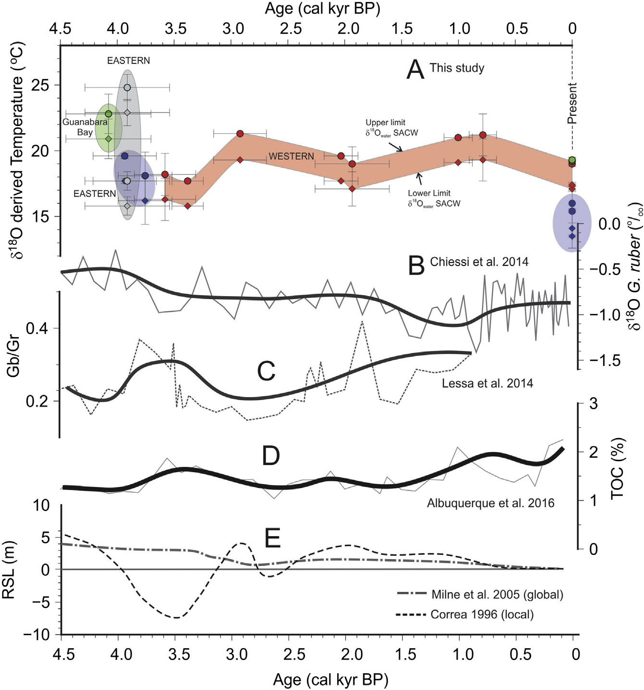

Late Holocene palaeotemperatures and palaeoenvironments in the Southeastern Brazilian coast inferred from otolith geochemistry

Resumo em Português
A paleoceanografia e as reconstruções climáticas do Holoceno foram avaliadas com base em análises de otólitos de peixes provenientes de sambaquis localizados ao longo da costa do estado do Rio de Janeiro, Brasil. A ressurgência costeira sazonal moderna está associada à ascensão de uma massa de água profunda e fria, como consequência dos ventos persistentes de nordeste que afetam o clima no sudeste do Brasil. No entanto, essa influência sazonal e o efeito do paleoambiente do Holoceno em águas rasas são pouco conhecidos. Neste trabalho, as paleotemperaturas costeiras foram estimadas com base em análises geoquímicas de otólitos. Os resultados das análises de δ¹⁸O e δ¹³C de otólitos do Holoceno, obtidos de sambaquis costeiros separados por uma distância de quase 200 km, mostram dois sinais distintos de paleotemperatura derivados de otólitos em uma região costeira sob influência de ressurgência. Além disso, esta análise sugere que os peixes viviam em águas marinhas, apresentando composição microquímica semelhante à de otólitos marinhos modernos.